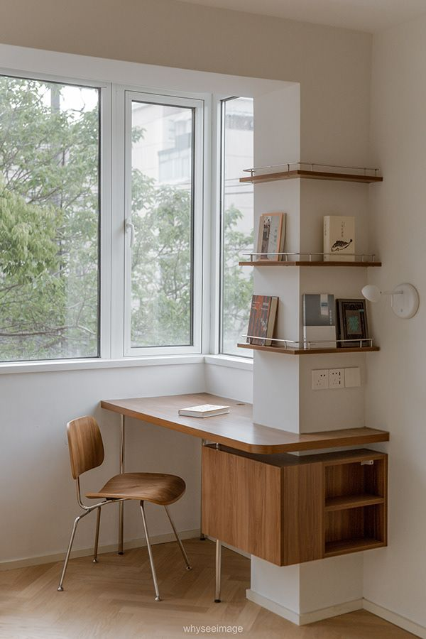

Hi, I'm Simran Roy
and I'm currently pursuing BCA. An enthusiastic

A brief introduction...
Hello People! I am Simran Roy who is currently pursuing Bachelor's in Computer Application from Jagannath Community College ,Delhi. It is a three year course which will be completed in 2023 as I joined in the year 2020. This has developed my fascination for coding in various languages as their are numerous perks of every language that I have learnt. Using the knowlegde that I have gained I want to become a FullStack Developer. I have completed my higher education from Science background hence I have interest in mathematics and physics.
Skills
Being a former student of Science with no Computer Science I thought was a diadvantage for me to begin with doing something specifically in it. But BCA is something that anyone can opt be it from any course the student belongs. To begin with I started with C language and gradually shifted to C++ so I have a keen knowledge about it. But, the frontend languages was included from the starting semester itself so I was more inclined towards HTML, CSS and still learning the updation being in them. On the otherhand, backend development is not something I'm intersted in but I'm passionate about FullStack developer so have to work on the both ends.Furthermore, I also have knowlegdein python and Java and working on my Data Structures.

Projects
As a part of the course curriculum I was assigned to do two projects the first one I did was in the second year which dealt with C# language which included blinking LEDs using Arduino board an the other one was in the third year which was about developing a E-fashion web application from which I learnt doing both backend and frontend. I also learnt Hibernate a new object based database management using which the data storing coding was reduced and had become easy. These were my official projects apart from this I have also designed few projects in order to enhance my coding skills which I have uploaded on github the links for which are given below:
Past Experience...
Being a newbee in this technical world and a fresher I have less work experience. I have done an internship for two months at an educational institution(CLEAREXAM) as an IT operator. I had to work on just with the data handling part of the company. I worked in a team which helped me in enhancing my teamwork capabilities also to balance my individual work alongwith group participation. On the additional side, I also have tutoring experience which for me is a plus point and a fun way of learning.
The internship certificate for the tenure is attached below:
Internship Certificate

Education
As mentioned above I have done my Bachelor's in Computer Application from Jagannath Community College (Delhi) which will be over in 2023. I completed my Schooling through CBSE board and Science was my stream back then from my hometown which is Siliguri(West Bengal)Certifications
Following are the ceritifications that I have completed as far as now few I have earned through college and some by myself apart from the curriculum.FullStack Training Session
Technical Support(Google)